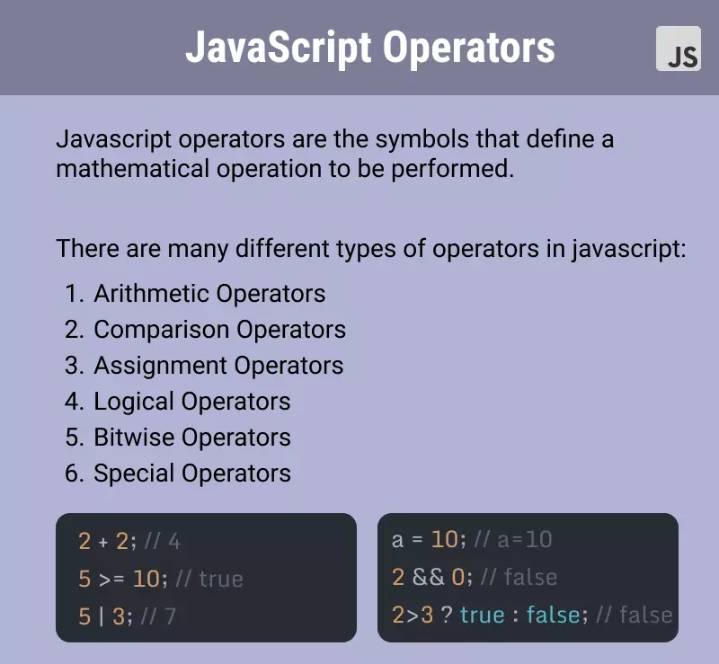
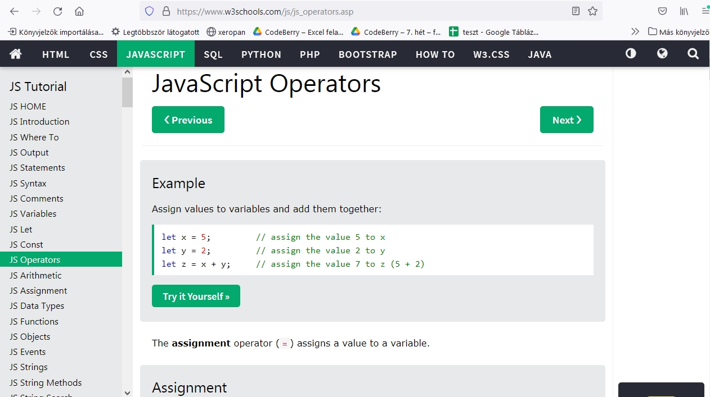

Saját eszemmel elgondolva
Változó:
Bármilyen programot írunk, azokban adatokkal dolgozunk. Legtöbbször ezekre az adatokra nem csak egyszer van szükségünk a programunkon belül (akár arra, hogy kiírjuk a képernyőre), hanem további műveleteket, feladatokat szeretnénk velük végezni. Ezért, hogy ezek az adatok a programunkon belül több helyen is elérhetőek legyenek, el kell azokat tárolnunk valahol, hogy később használhassuk őket. Az adatokat pedig a Változókba tudjuk eltárolni.
"Változónak nevezünk a programozási nyelvekben egy olyan azonosítót (szót), amivel valamilyen adatra, vagy objektumra hivatkozunk."
Forrás: https://wiki.prog.hu/wiki/Változó
Saját kútfőből:
Valójában amikor "nevesítünk" egy változót, a RAM vagy cach egy bizonyos szegmensét
elkülönítjük az adat tárolására. Szerencsénkre a fejlődés miatt a programozónak - az
Assembly vagy C nyelvvel ellentétben - a JavaScript-ben már nem kell a tároló címét tudnunk,
vagy az abban lévő adatok elérését ismerni, hogy azokkal műveleteket tudjunk végezni,
megteszik helyettünk a beépített linkerek és editorok (magas szintű nyelv).
Nekünk elég
csak a változó deklarált nevével utalni rájuk. Ezért lehetőség szerint jó, ha előre
definiáljuk a változó típusát, vagy inicializáljuk azt, mert a program eszerint foglal le
memóriát (pl. nem egyforma helyet igényel egy integer, mint egy float, vagy egy array) Java
Script-tel ellentétben sok nyelv erösen követeli is ezt (típusos nyelvek).
Deklaráció
Deklarálunk egy változót, hogy azok nevére hivatkozva tudjunk velük műveleteket végezni a tárolás helyétől függetlenül, illetve bárhol a program futása során újra fel tudjuk használni, illetve a benne lévő értéket (néhány kivételtől eltekintve) meg tudjuk változtatni.
Pl. Assembly nyelvben nem egyszerű egy szorzás:
- MOV AX,1234h - egy számot (1234h) rak be az AX regiszterbe
- MUL WORD PTR [5678h] - a fenti értéket megszorozza a memória egy adott címén (5678h) található érétkkel
- MOV [5678h],AX - az eredményt berakja az előbbi memóriarekeszbe Innentől kezdve elveszett az eredti (1234h) adat
Forrás: https://www.inf.u-szeged.hu/~ber/okt/asm/jegyzet.pdf
A változóknál még talán fontos lehet, hol és hogyan deklaráljuk azokat, mert "láthatóság"
szempontjából lehetnek egy függvényen, vagy blokkon belüliek.
Ezek csak a függvényen belül elérhetőek, kívülről nem láthatóak.
Vagy globálisak, ezek báhonnan elérhetőek függvények, vagy metódus számára (Talán még másik web
oldalon is a Local Storage, vagy Session Storage-en keresztül)
Undefined:
Amikor a változó létre lett hozva, kapott nevet, de nem lett hozzárendelve érték. Az adott memóriarekesz még üres, arra vár, hogy tegyünk bele valamit. Ha ezzel az éréték nélküli változóval, üres adattal próbálunk műveletet végezni, akár kiíratni, ezt a hibaüzenetet kaphatjuk: Undefined.
Operátorok:
Az operátorok olyan funkciók, amelyek valamilyen műveletet végeznek el változókon, vagy más
különböző értékeken, ezek lesznek az operandusok.
Operátorok lehetnek:
- aritmetikai
- logikai
- relációs(összehasonlító)
- bit műveletek(bitenkénti)
- értékadó operátorok (=)
- Még ide sorolják a típuskonverziót is
Konkatenáció:
Stringek "összeadása". Lényegében betűk vagy szavak összefűzése egy karakterlánccá.
Azonban ...
A JavaScript-ben létezik a concat() függvény, amely segítsével szintén összefűzhetünk két
string-et és meghatározhatjuk, hogy azok milyen jellel, szimbólummal legyenek elválasztva.
Példa a használatára:
valtozo1: Tanuljunk
valtozo2: JavaScript-et!
Összefűzve:
És a kód:
var valtozo1 = "Tanuljunk";
var valtozo2 = "JavaScipt-et!";
document.getElementById("szoveg").innerHTML = valtozo1.concat(" ", valtozo2);
Példa különböző változók deklarálására:
Konkatenálom a kapott nevet, mint stringet:
Szabadjon itt állnia a fenti esemény kódjának:
A név és születés változók:
function postaz() {
// Deklarálom a "nev" változót
let nev = document.getElementById("nev").value;
// Deklarálom a "birth" változót, de mivel az input-ról string-ként kapom meg
// ahhoz, hogy számolni tudjak vele integer típussá kell konvertálnom
let birth = parseInt(document.getElementById("birth").value);
// Használhatom a JavaScript beépített függvényét, mely megadja az
// aktuális pontos dátumot:
most = new Date();
/ Azonban az aktuális dátum idő-formátumban van,
// így itt is kell egy típuskonverzió
// Itt használom a Date() getFullYear metódusát, ami csak az évet adja vissza
let ev = parseInt(most.getFullYear());
// A két integer-ből egy aritmetikai operátor segítségével
//definiálom a "kor" változót
let kor = ev - birth;
// A kiszámított változókat DOM művelettel visszaadom a HTML-nek
document.getElementById("udvozlet").innerHTML = "Tisztelt " + nev + " üdvözöllek az
oldalon !";
document.getElementById("ma").innerHTML = "Most: " + most.getFullYear() + " évet írunk";
document.getElementById("korod").innerHTML = "Tehát jelenleg te "+ kor + " éves vagy.";
}
Átváltás más számrendszerbe:
function atvaltas() {
// Deklarálom és beolvasom a két operandust:
let sz = parseInt(document.getElementById("num").value);
let al = parseInt(document.getElementById("alap").value);
// függvény definiálása
function szamolgass(szam, alap) {
// Kivédem, ha a felhesználó nem megfelelő adatot írt be,
// ne térjen vissza a függyvény se NaN, se Undefined hibával
if (!Number.isFinite(szam)) return 0
if (!Number.isInteger(alap)) return 0
if (alap < 2 || alap> 36) return 0
// ha minden megfelelő a függvény visszatérési értéke ez a konverzió
return szam.toString(alap);
}
// meghívom a függvényt a két beolvasott változóval:
szamolgass(sz, al)
console.log(szamolgass(sz, al));
document.getElementById("ertekek").innerHTML = "A " +
document.getElementById("num").value + " szám a(z) " +
document.getElementById("alap").value + " számrendszeren = " + szamolgass(sz,
al);
}
A W3Schools definícióit felhasználva
"Mik azok a változók?
A változók az adatok tárolására (adatértékek tárolására) szolgáló
tárolók."
4 módszer a JavaScript-változó deklarálására:
- var segítségével
- let segítségével
- const segítségével
- Semmit sem használva
"A JavaScript dinamikusan tipizált nyelv. Ez azt jelenti, hogy nem kell deklaráláskor meghatározni egy változó adattípusát, és az adattípusok automatikusan konvertálódnak, ahogy az a script futása során szükséges."
Forrás: http://nyelvek.inf.elte.hu/leirasok/JavaScript/index.php?chapter=3
Mikor használjuk a JavaScript var-t?
Mindig deklaráljuk a JavaScript-változókat a
var, let vagy a const paraméterekkel. A var kulcsszót minden JavaScript kódban
használták 1995 és 2015 között.
A let és const kulcsszavakat 2015-ben adták hozzá a
JavaScripthez. Ha azt szeretné, hogy a kód a régebbi böngészőben fusson, akkor a var
használható.
Ebben a példában x, y és z változók, a let kulcsszóval deklarálva:
let x = 5;
let y = 6;
let z = x + y;
Ebben a példában x, y és z nem deklarált változók:
x = 5;
y = 6;
z = x + y;
A fenti példákból létható:
- x tárolja az 5 értéket
- y tárolja a 6 értéket
- z tárolja a 11 értéket
"Megjegyzés:
Jó programozási gyakorlat az összes változót a szkript elején
deklarálni. "
Egy kifejezés, sok változó:
Egy utasításban sok változót deklarálhatunk. Kezdje az utasítást let-el, és válassza el a változókat vesszővel:
let person = "John Doe",
carName = "Volvo",
price = 200;
Érték = undefined
"A számítógépes programokban a változókat gyakran érték nélkül deklarálják. Az érték lehet
valami, amit ki kell számítani, vagy valami, amit később kell megadni, például a
felhasználói bevitel. Az érték nélkül deklarált változó értéke undefined lesz.""
A carName változó értéke undefined lesz az utasítás végrehajtása után:
let carName;
document.getElementById("demo").innerHTML = carName;
Az auto neve:
JavaScript operátorok
,,Az algebrában és számítógéptudományban: műveleti jel, a műveletek elnevezésére használt szimbólum.”
"Ebből kiindulva operátoroknak nevezzük azokat a nem-szöveges szimbólumokat, amelyek valamilyen műveletet írnak le. A legegyszerűbb ilyen műveletek az összeadás, a kivonás, a szorzás és az osztás. Ezek az alapvető operátorok minden programnyelvben megtalálhatóak, de ezenfelül is számos operátor létezik. Az operátorok programozási nyelvenként eltérhetnek, van amelyik többet tartalmaz, van amelyik kevesebbet, illetve van olyan nyelv, ahol egy-egy operátort másképp kell leírni."
Forrás: https://webiskola.hu/javascript-ismeretek/
Konkatenáció
A konkatenáció konkrétan azt jelenti, hogy összefűzés. Segítségével számokat, szövegeket, karaktereket tudunk összefűzni.
"A sztringekre az összehasonlító operátorokon kívül a konkatenáció operátort (+) is lehet használni. Ez az operátor két sztringet összekapcsol és visszatér a két operandus sztring uniójaként kapott sztringgel. A rövidített értékadó operátort (+=), szintén lehet használni sztringek konkatenálására."
Forrás: http://nyelvek.inf.elte.hu/leirasok/JavaScript/index.php?chapter=3